深入强化学习之策略梯度的基础
Table of Contents
本篇文章翻译自 Going Deeper Into Reinforcement Learning: Fundamentals of Policy Gradients。作为自己强化学习的一个总结。
正如我之前的文章所说，最近我非常急切的想要找新的 Paper 去阅读。这次我盯上了策略梯度，一个在当前研究领域相当火的方向。
1 假设和问题陈述
无论在什么研究领域中，我们总是要先去定义一些假设。（这里说的“我们”，指的的写这些 Paper 的研究人员。）在强化学习和策略梯度的领域，这些假设通常为 episode 的设置，即 agent 在其环境下进行多次训练的轨迹。例如，一个 agent 在玩 Ping-Pong 游戏，那么一个 episode 就包含了从游戏开始到结束的所有过程。
定义一个长度为
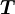
的轨迹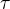
：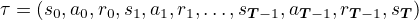
1其中
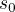
服从于起始状态分布，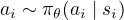
，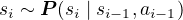
,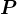
会随环境的变化而变化。在优化时，我们实际上忽略了 的变化，因为我们所关心的只是获得一个很好的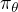
的梯度信号，使得 变得更好。并且，由于奖励通常是状态和动作的函数，所以在轨迹优化中不会经常用到 。策略梯度的目标是什么呢？不同于 DQN 之类的值函数优化算法（通过 Q-value 来间接更新策略），策略梯度直接更新控制策略的参数，因此，我们的目标为：
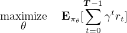
2- 式子中的 表示式中的奖励
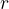
是通过使用策略 生成的轨迹来计算的。我们的目标是找到最优的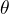
使得期望最大。 - 尽管这是我最常用的公式，但我们不需要去优化带有折扣因子的奖励函数。替代优化目标的方法有，将
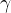
为 1 来忽略它；如果轨迹是无限长的，可以将 设为无限长。
设为无限长。
上面的分析提出了一个非常重要的问题：我们如何去寻找一个最优的 ？如果你之前学过优化问题相关的课程，那你就会知道怎么去做：对 进行梯度上升更新，即
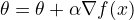
，其中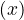
是我们要优化的函数。在这个问题中，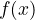
是任何我们使用过得奖励总和的期望函数。2 两步：对数导数技巧和对数概率的确定
在开始计算梯度之前，我们先来看两个之后会用到的数学公式。第一个被称作“log-derivative”技巧，它告诉我们，如何在期望中插入
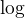
函数。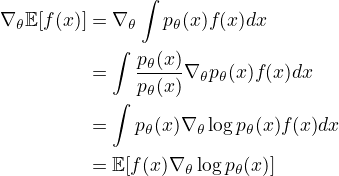
2其中，
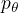
是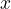
的取样分布。另一个技巧是对轨迹的 函数求梯度：
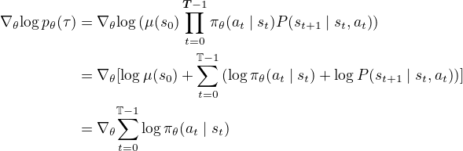
3根据马尔科夫决策过程假设，将 的概率分解为一系列概率，其中，下一个动作取决于当前状态，下一个状态取决于当前状态和执行的动作。为了明确起见，我们使用已经定义的函数： 和 分别表示策略和下一个状态的概率。（可以看到，当我们计算梯度时， 消失了。）
3 梯度的计算
有了上面介绍的两个工具之后，我们现在可以重新审视我们的目标了，即计算奖励之和的期望的梯度。我们使用
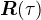
表示我们想要优化的奖励函数，使用上面的两个公式，可以得到：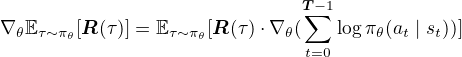
4在上式中，期望是关于策略函数的，因此可以认为
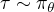
。在实际训练过程中，我们需要通过轨迹来获得经验期望，用此期望去估计实际期望。我们终于得到了想要的梯度！但这还远远不够。我们可以让 agent 跑很多个回合，收集一堆轨迹信息（
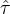
），并使用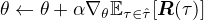
去更新策略。但这种方法由于在梯度估计时有很大的方差，所以训练的效果很慢，并且很不稳定。在一个 batch 的训练之后，我们可能会获得非常不稳定的结果：很好的效果，很差的效果或者是相同的效果。这些梯度估计值的高方差正是为什么很多人都花了很多时间致力于研究降低方差技术的原因。（从我个人的研究经验中再补充一下，减少方差这个难点肯定步仅仅限于强化学习，它也出现在许多涉及方差的统计项目中。）4 如何引入 Baseline
减少方法的标准方法是在期望函数中添加一个 Baseline 函数
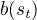
。假设我们不使用折扣因子，
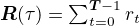
，我们可以将策略梯度等式扩展为一下三个等式：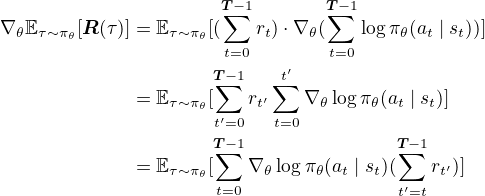
5解释：
- 第一步：将新的奖励函数带入我们之前的梯度方程中，使用之前的两个方法化简即可求出。
- 第二步：首先，
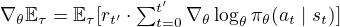
。这个式子最简单的证明方法是将 替换为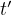
， 替换为 。然后使用之前介绍的两个工具来推导出来。这个式子和之前式子最主要的区别在于，这个式子现在考虑的是在时间 处获得的奖励期望，我们的轨迹也是在时间 处停止。更进一步的讲，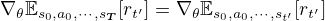
。（翻译者： 时间步的奖励自然是与之后的信息无关。）我在之后的讲述中会有另外一个更精确的解释。 接下来，对于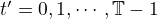
，假设我们可以交换梯度和，我们将会得到：
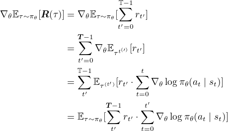
6其中，
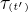
表示轨迹只运行到时间步 。（完全免责申明：我不确定是否必须要使用 进行公式推导，并且我认为大多数人都可以进行此计算而不必担心确切的期望细节。）- 第三步：这步使用了一个漂亮的数学技巧。为了简化后续的推导，我们定义
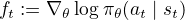
。另外，我们先忽略期望，只关心期望内部的式子。基于上诉定义，第二步等式中期望内部的式子可以写成：
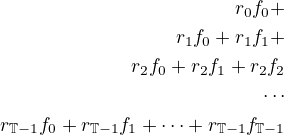
7可以看到，每个
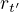
都有自己的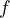
函数对应。接下来，我们换个角度来看，不再是直接横向相加，而是竖向相加。第一列为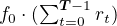
。第二列为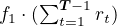
。这样我们就得到了第三个等式。有了上面的等式推导之后，我们就可以引入 Baseline 函数了。Baseline 函数
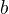
是一个关于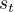
的函数，我们将其插入策略梯度的相应位置：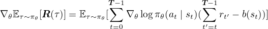
8乍一看，这个式子可能没有我们想象中那么有用，甚至还会怀疑这样做是否会导致梯度的估计出现偏差。幸运的是，这样做并不会使梯度的估计带来偏差。这样的结果令我感到震惊，因为这个基准函数 仅仅是个以 为参数的函数。但是，上诉的说法其实有待商榷，因为通常我们希望 是从时间步
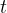
开始到最后的期望收益，这意味着它实际上只取决于后续时间步的活动。不过在现在，我们可以就把它理解为是 的函数。5 理解 Baseline
首先，我们先理一下为什么加入 Baseline 函数之后不会使我们的策略梯度有偏差。然后，将会讲解为什么 Baseline 加入之后可以减少方差。这两点抓住了两全其美的局面：保证无偏差且减少方差。
我们先来证明一下加入 Baseline 的策略梯度估计是无偏的。
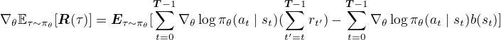
9我们需要证明的是，对于任意的时间步 ，
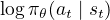
和 的积为 0。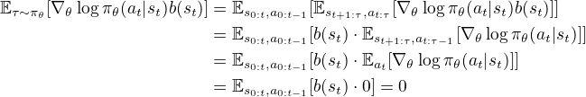
10解释（事先免责申明下）：
- 轨迹
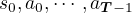
现在被表示为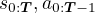
。另外，期望可以被拆分。如果你对此感到困惑，请考虑关于两个变量的期望定义。我们可以在任何适当封闭的位置写括号。更近一步，我们可以在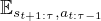
到 的转换中忽略不必要的参数。假设我们处于离散状态，动作空间为 ，状态空间为 ， 可以被化简为：
根据期望的定义，上面的推导是正确的。我们像之前使用对数概率计算的梯度那样将其拆分。
- 上面的证明也适用于无限时间范围。在 GAE 论文的附录中，作者使用于上述内容完全匹配的证明来事先，只是 和 为无穷大。
- 关于上诉期望为 0 的证明，这是由于分值函数的一个众所周知的性质，它是对数概率的梯度。
所有时间步的梯度期望都遵循上面这个等式。这里我计算的是动作空间连续的版本，它在离散动作空间下也是成立的。
上面的讨论证明了引入 Baseline 不会导致产生偏差。
接下来我们要讨论为什么引入 会减小方差。为了简化公式，设 。我们只关心期望内部的公式。 期望的方差为：
近似一是由于我们使用方差的和来近似和的方差。这通常是不正确的，但我们先这样假设，然后根据方差的定义 ，由于引入 之后期望仍然是无偏的，即 ，所以就只留下了 这一项。近似二是由于我们假设等式中相乘的两项具有独立性，因此可以考虑期望相乘。
最后，我们剩下了 。如果我们能够优化 的选择，那么这就是一个最小二乘问题，很显然， 的最佳值应该是 。事实上，这也是为什么策略梯度的研究者想要使用 去优化策略梯度从 时刻开始的回报值。
这些近似在实际训练中到底有多准确呢？我的直觉告诉我它们其实还算可以。如果样本之间的相关性被破坏，那么近似一就会变得越准确，因为样本 不会再从同一条轨迹生成。
6 折扣因子
到目前为止，我们知道想要优化的目标为期望回报，或者说是期望奖励之和。如果你之前学习过值迭代和策略迭代，你一定会记得我们通常会用到折扣因子 。同样，我们将折扣因子引入到这里：
其中， 表示折扣，从 1 开始，随时间步减小。这是一个合理的近似值。引入折扣因子之后，我们希望 Baseline 函数满足 。
7 优势函数
这节中，我们将使用下列两个值函数来重写策略梯度方程：
这两个函数同样也有带折扣因子的版本，我们可以记作 和 。同理，也有从特定时间步开始的值函数 ，表示在时间步 得到的回报的期望。
优势函数通常被定义为：
带折扣因子的优势函数与此定义类似。从直觉上讲，优势函数告诉我们，与 action 的回报的期望相比，当前 action 的回报要好多少。
上面的定义看起来已经非常接近策略梯度的公式了。
在第 步，我们使用之前的定义来替换。 同样在第（i）行中，我们注意到值函数是一个基线，因此我们可以在其中添加它而不更改期望的无偏性。然后，第（ii）和（iii）行仅仅将优势函数带入公式。